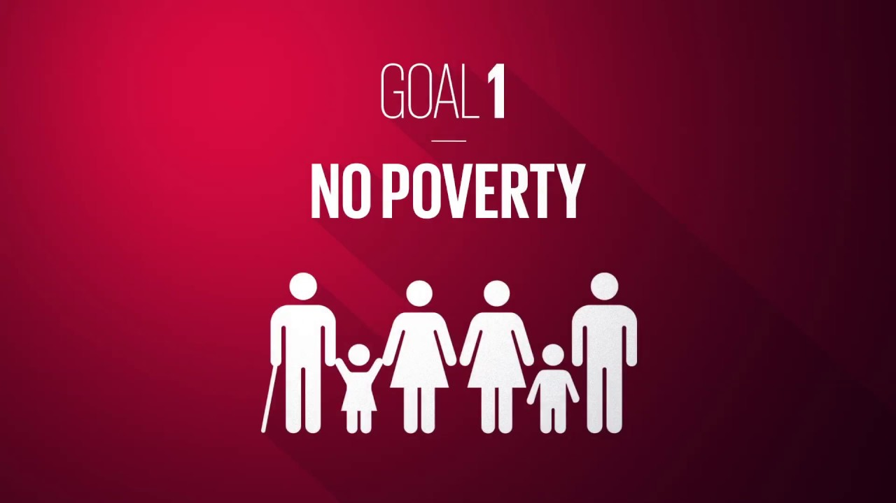

What is poverty? Most of us have a grasp of what it is. However, poverty around the world is engrained more deeply than most would think. ...The definition of being in poverty is living off less than $1.90 each day. $1.90. A single bag of chips in your average vending machine costs approximately $1.25 for reference. Your average day person in Canada runs off around $2 per day. 10% of the world lives in conditions like these. While that might not sound too bad, thats 780 million people. While this number has been decreasing over the years, still almost half the world lives under less than $5.50 a year. Poverty throughout the world is a serious problem that needs to be adressed. While most people tend to think that all poverty is in thirld world countries and stereotypically poor places, such as Africa, this is not true. For instance, in places such as Morocco, poverty is very limited. Poverty exists all across the world, and even in Canada. In fact, 1 in 7 people are in poverty. While that might come as a shock, think about places such as Nigeria where 3 in 5 people will be in poverty. On the other hand, the country with the lowest poverty rate is Turkmenistan, with a poverty rate of 0.2%With that, poverty is a serious issue that should be highlighted and viewed as a serious problem.